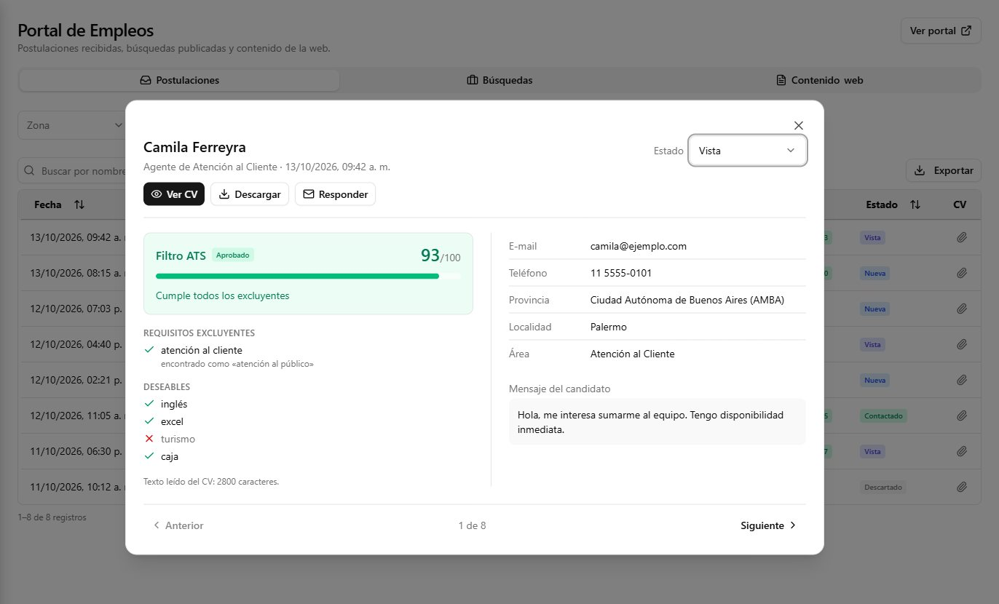
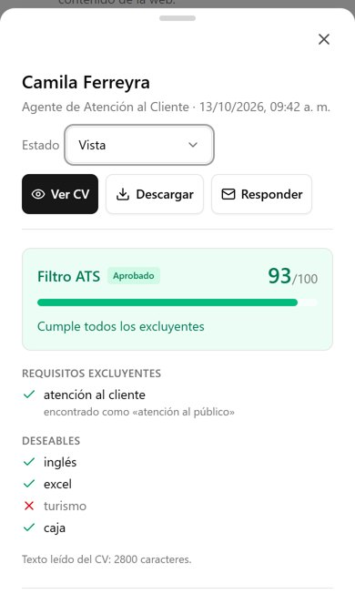
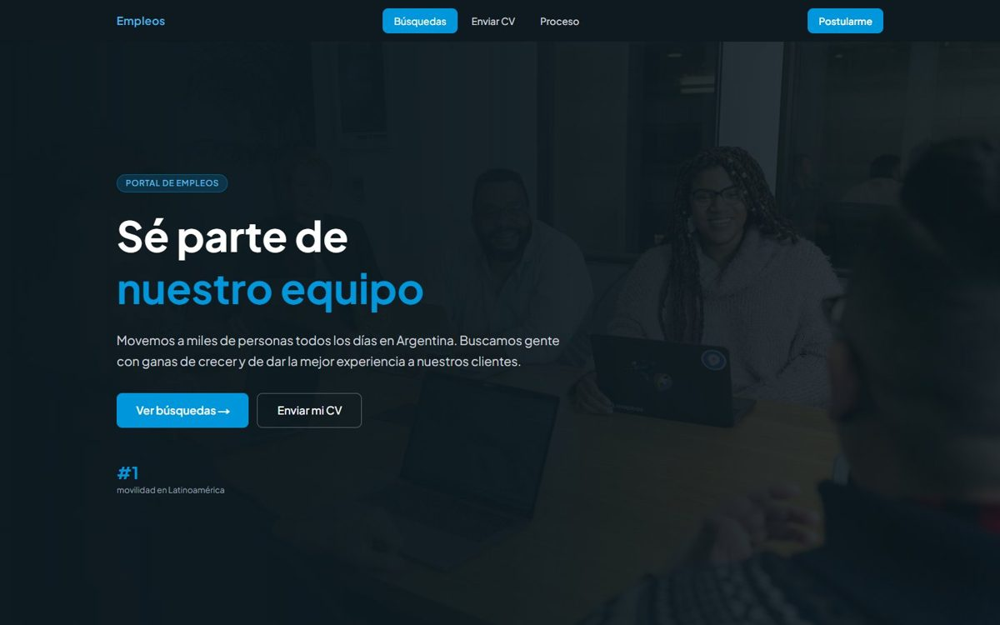
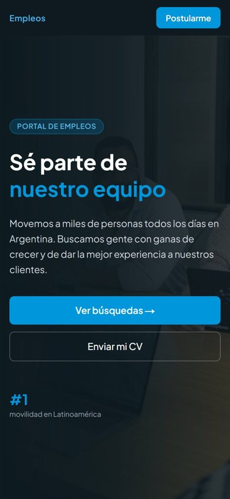

Los CV de todas tus sucursales, en una bandeja y ya filtrados.
Postulá le da a tu empresa una página de empleos con tu marca y un filtro que lee cada CV contra los requisitos del puesto. Tu equipo de RR. HH. empieza por los que cumplen.
Funciona en producción en una empresa de alquiler de autos con sucursales en todo el país.
Los candidatos se pierden antes de llegar a RR. HH.
El CV llega al WhatsApp de un encargado, en papel al mostrador o a una casilla personal.
Todos entran por la misma página, con los mismos datos, y quedan en una sola bandeja.
Hay que escribirle al candidato para pedirle el teléfono o saber a qué puesto se postula.
Cada postulación trae contacto, localidad, provincia, área y la búsqueda elegida.
Alguien lee cien CV para encontrar los diez que cumplen lo mínimo.
El filtro marca quién cumple los excluyentes y ordena por puntaje. RR. HH. sigue decidiendo.
De la búsqueda publicada al candidato contactado
Publicás la búsqueda
Puesto, lugar, jornada y modalidad. Cargás los requisitos excluyentes y deseables, con todas sus formas de escribirse.
El candidato se postula
Desde el celular, sin crear usuario: adjunta el CV en PDF o Word y completa sus datos en un solo paso.
El filtro lee el CV
Compara el texto con los requisitos, sin importar mayúsculas ni acentos, y le da un veredicto y un puntaje de 0 a 100.
RR. HH. decide
Revisa la bandeja por zona, veredicto y puntaje, contacta o descarta, y deja un comentario de cierre.
Una bandeja que se ordena sola
Filtros por zona, provincia, búsqueda, veredicto y estado. Lo que ves se exporta a Excel. Al abrir una postulación, el filtro muestra requisito por requisito qué encontró en el CV, y pasás a la siguiente sin volver a la lista.


Cada postulación se ubica por provincia y zona del país, así cada responsable regional ve primero a los candidatos de su zona.
Con tu marca, editable sin pedirle nada a Sistemas
Portada, foto de fondo, cifras, beneficios, pasos del proceso y preguntas frecuentes se editan desde el panel. Cada cambio se ve en la web al instante.


Lo que ya funciona y lo que llega con el piloto
Filtro de requisitos
Excluyentes y deseables, con variantes. Veredicto: aprobado, no pasa, no legible o sin filtro.
Bandeja y estados
Nueva, vista, contactado o descartado, con comentario de cierre y exportación a Excel.
Web editable
Textos, fotos, beneficios, preguntas frecuentes y búsquedas, desde el panel.
Archivos controlados
Sólo PDF o Word hasta 5 MB. Se revisa el tipo real del archivo y se frenan los envíos automáticos.
Ficha de cada puesto
Qué ofrecemos, qué buscamos, responsabilidades y requisitos, antes del botón «Postularme».
Preguntas propias
Texto, sí/no, opciones, fecha o número; para toda la empresa o para un puesto, obligatorias u opcionales.
Sección «Nosotros»
Quiénes son, qué hacen y qué ofrecen como lugar de trabajo, editable por la empresa.
Comprobante al candidato
Un mail de confirmación después de postularse, sin envíos duplicados.
Tu dominio y tus usuarios
Empleos en tu propia dirección y un usuario para cada persona de RR. HH., con su rol.
Un CV tiene datos personales. Los tratamos así.
Pensado para la Ley 25.326 de Protección de Datos Personales de Argentina.
- El CV no viaja por mailSólo lo ven las personas con permiso en el panel.
- Cada empresa ve sólo lo suyoPostulaciones, archivos y usuarios separados por empresa; la empresa la define el servidor, nunca el navegador.
- Aviso de privacidad en el formularioEl candidato sabe que sus datos se usan sólo para selección.
- El filtro ordena, no descartaToda postulación llega a la bandeja con el motivo visible. La decisión es siempre de una persona.
Pagás por mes, según cuántas búsquedas tenés abiertas
Inicial
Una sede, pocas búsquedas al año.
- Página de empleos con tu marca
- Filtro de requisitos y bandeja
- Exportación a Excel
Profesional
Varias sucursales o provincias.
- Todo lo del plan Inicial
- Tu propio dominio
- Preguntas propias y sección «Nosotros»
Corporativo
Grupos de empresas o selección masiva.
- Todo lo del plan Profesional
- Varias marcas en una cuenta
- Soporte prioritario y nivel de servicio acordado
Valores de referencia para el lanzamiento. Pagando el año por adelantado, dos meses sin cargo.
Buscamos dos o tres empresas para empezar
Usás el plan Profesional sin cargo y nos ayudás a definir el producto. Ideal si tenés sucursales en varias provincias y hoy recibís los CV por canales sueltos.
- Duración
- 3 meses
- Costo
- Sin cargo, plan Profesional completo
- Puesta en marcha
- Configuramos tu página y tus primeras búsquedas con vos
- A cambio
- Entrevistas de uso cada mes y un caso de éxito que podamos contar
Lo que nos suelen preguntar
¿El filtro rechaza candidatos automáticamente?
No. El filtro ordena: marca si el CV cumple los excluyentes y le da un puntaje. Una postulación que «no pasa» llega igual a la bandeja, con el requisito que faltó a la vista.
¿Cómo calcula el puntaje?
Va de 0 a 100. Los excluyentes pesan 70 puntos y los deseables 30, en proporción a cuántos aparecen en el CV. Alcanza con que aparezca una de las formas de escribir cada requisito, sin importar mayúsculas ni acentos.
¿Los candidatos ven los requisitos?
No. Si los vieran, los copiarían en el CV y el filtro dejaría de servir. La página muestra el puesto; los requisitos del filtro quedan del lado de RR. HH.
¿Qué pasa con un CV escaneado o en foto?
Se acepta igual y queda marcado como «no legible» para revisarlo a mano. El filtro necesita un PDF o un Word con texto.
¿Necesito a alguien de Sistemas?
No. Las búsquedas, los textos y las fotos de la página se cambian desde el panel y se ven al instante.
¿Se integra con LinkedIn u otras bolsas de empleo?
Todavía no. Podés compartir el link de cada búsqueda en redes, en la firma del mail o en un QR en tus sucursales. Las integraciones se definen con las empresas piloto.